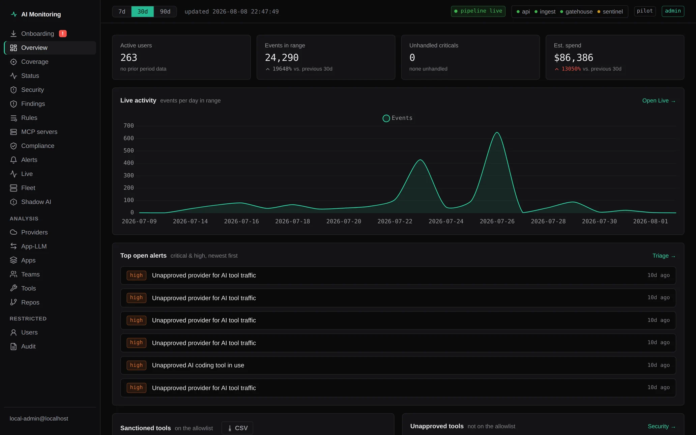
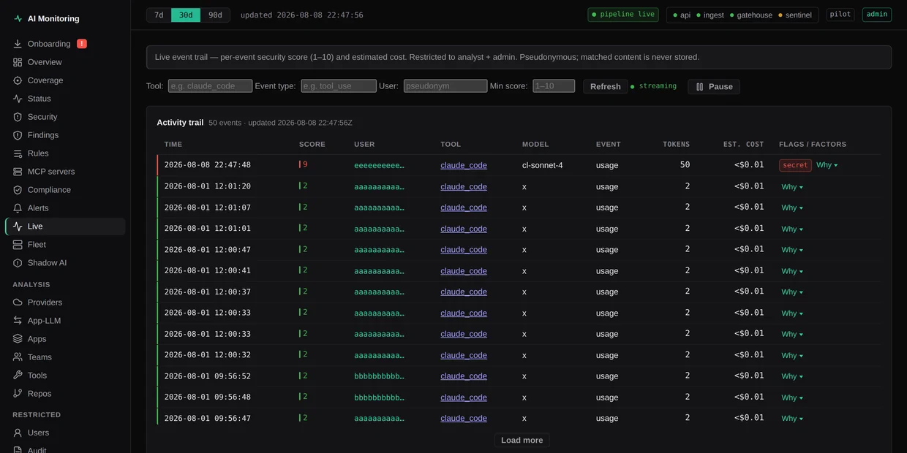
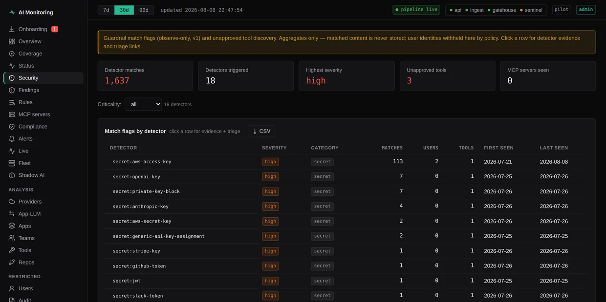

ai usage monitoring
Monitor and govern
AI behavior in real time
Self-hosted. Metadata only. Never your prompts, never your code.
Observe
every AI tool, agent, and
tool call, metadata only
Govern
secret rules block inline
on Claude Code endpoints
Analyze
pseudonymous attribution,
coverage and fleet risk
Improve
fix findings, tighten rules
watch exposure trend down
product
See it work
51s walkthrough. Synthetic demo data. No customer traffic.
inside the console
What the console shows



Simple, honest pricing
Community free for personal use and public open source. Team for fleets. Enterprise for security-led orgs.
Community
Free
Personal / evaluation / public OSS
Personal projects and open source. No card, no time limit.
- soft fleet cap: 3 seats
- all collectors & dashboards
- no phone-home required
- community support
Team
$12 / seat / mo
Billed annually ($144 / seat / year). Monthly $15 / seat. Min 5 seats.
Engineering orgs running a real fleet under policy.
- fleet beyond the community cap
- shared findings & team dashboard
- community + email support
- free secret enforce rules (Claude Code)
Enterprise
From $28 / seat / mo
Annual contract. Volume and air-gap: contact sales.
Security-led fleets, on-prem or VPC, compliance and air-gap.
- SSO / SCIM / OIDC
- paid enforce packs & Sentinel
- compliance evidence packs
- dedicated support & SLA